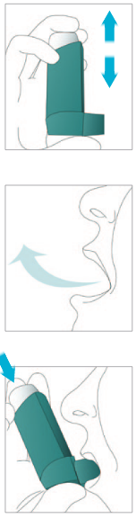
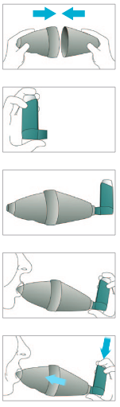
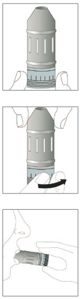
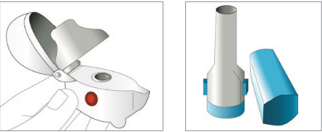
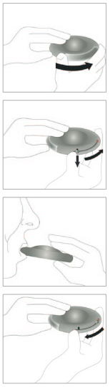

Uso:
1. Retirar la tapa y agitar 10 segundos. Si es nuevo o se ha dejado de usar durante una semana o más, realizar dos o tres disparos al aire antes de inhalar.
2. Exhalar.
3. Sellar el inhalador con la boca, teniendo en cuenta que el contenedor metálico quede en posición vertical, hacia arriba, o en forma de L.
4. Iniciar la inspiración, y en ese momento presionar el contenedor metálico y continuar inhalando por la boca.
5. Retirar el inhalador y sostener la respiración 10 segundos.
6. Exhalar lentamente y esperar 30 segundos para repetir la operación.
7. Esta maniobra se repetirá cuantas veces sea necesario, según prescripción.
8. Realizar enjuagues bucales y gargarismos.
Mantenimiento:
no exponerlo a temperaturas superiores de 50º ni perforarlo. Es importante que se conserve limpio y evitar que se obstruya el conducto. Para ello retirar el contenedor metálico y lavar el caparazón plástico con agua jabonosa dos veces por semana, secar y armar nuevamente el dispositivo.
Cámaras de inhalación:

Uso:
No es necesario coordinar la respiración con el disparo del cartucho.1. Colocarse de pie o semi-incorporado.
2. Destapar el cartucho y agitarlo.
3. Acoplar el cartucho en el orificio de la cámara.
4. Colocar la boquilla de la cámara en su boca, apoyada en la lengua, cerrando los labios alrededor de la misma.
5. Sacar el aire del pecho (espiración) lenta y profundamente.
6. Efectuar una pulsación del cartucho.
7. Meter el aire (inspirar) de la cámara. Si tiene dificultad para realizar una sola inspiración, puede realizar cinco o seis respiraciones a través de la cámara.
8. Si debe repetir dosis, esperar 30 segundos hasta la siguiente.
Turbuhaler:

Uso:
1. Quitar la tapa, desenroscándola.
2. Colocar el inhalador en forma vertical con la boquilla hacia arriba, dar vuelta a la base hasta el tope y regresarla hasta escuchar un tic.
3. Exhalar por fuera de la boquilla.
4. Sellar la boquilla del inhalador con la boca e inhalar profundamente.
5. Retirar el inhalador y repetir la operación según prescripción.
6.Realizar enjuagues bucales y gargarismos.
Mantenimiento:
limpieza con paño seco.
Diskus:
Uso:
1. abrir el dispositivo, sostener la tapa y ponerlo con la boquilla frente a usted.
2. deslizar la palanca en la direccion indicada por la flecha, hasta escuchar un clic.
3. exhalar todo el aire fuera del dispositivo, sellar los labios en la boquilla e inspirar profundo por la boca y retirarlo.
4. no es necesario sostener la respiración.
5. rotar el cuerpo giratorio del dispositivo, hacia si mismo, hasta escuchar un clic característico de la posición de cerrado. La palanca volverá automáticamente a su posición original.
6.realizar enjuagues bucales y gargarismos.
Mantenimiento:
limpieza con paño seco.
Aerolizer. Sistema de unidosis:

Uso:
1. retirar la tapa y sujetar firmemente la base del inhalador, en posicionn vertical y abrirlo girando la boquilla en dirección que indica la flecha.
2. poner el medicamento en la ranura que tiene forma de cápsula y se encuentra en la base del inhalador. Se aconseja no sacar la cápsula hasta el momento de utilizarla.
3. girar la boquilla hacia la posición de cierre.
4. mantener el inhalador en posición vertical, pulsar los botones laterales simultáneamente y luego soltarlos.
5. exhalar todo el aire posible, luego introducir la boquilla en la boca, sellándola con los labios e inclinando ligeramente la cabeza hacia atrás.
6.después de inhalar todo el aire, retirar el inhalador de la boca y respirar normalmente. Abrir el inhalador y comprobar si queda polvo en la cápsula. Si fuese así, repetir el paso anterior.
7.extraer la cápsula vacía, cerrar la boquilla y poner el capuchón.
8. realizar enjuagues bucales y gargarismos.
Mantenimiento:
se puede lavar con agua y dejar secar al aire. También se puede limpiar la boquilla con un paño seco.
Accuhaler:

Uso:
1. Deslizar el protector de la pieza bucal.
2. Pulsar el gatillo lateral hacia abajo y hasta el tope.
3. Sacar el aire del pecho (espiración) de forma lenta y profunda, y hasta el tope (pero no en el inhalador de polvo).
4.Colocar los labios alrededor de la pieza bucal.
5. Aspirar de forma profunda y rápida.
6.Mantener la respiración unos 10 segundos.
7.Espaciar las siguientes dosis 30 segundos.
Handi-Haler:
contiene medicamento en cápsula de gelatina.
1. desprender del aluminio contenedor una cápsula, sólo en el momento de realizar la inhalación.
2. abrir la tapa protectora y la boquilla del dispositivo en el mismo sentido, e introducir la cápsula en la cámara central.
3. cerrar la boquilla firmemente hasta oír un clic, presionar a fondo el botón verde una sola vez y soltarlo con el fin de perforar la cápsula y que el medicamento pueda ser liberado.
4.exhalar todo el aire posible, luego introducir la boquilla en la boca e inclinando ligeramente la cabeza hacia atrás. Inhalar.
5. retirar el dispositivo y sacar la cápsula utilizada y botarla sin manipularla. Lavarse las manos.
6.cerrar la tapa protectora.
7.realizar enjuagues bucales y gargarismos.
puede lavarse una vez al día bajo el chorro del agua y dejar secar al aire durante 24 horas, también se puede limpiar la boquilla con paño húmedo.
Uso:
1. desprender del aluminio contenedor una cápsula, sólo en el momento de realizar la inhalación.
2. abrir la tapa protectora y la boquilla del dispositivo en el mismo sentido, e introducir la cápsula en la cámara central.
3. cerrar la boquilla firmemente hasta oír un clic, presionar a fondo el botón verde una sola vez y soltarlo con el fin de perforar la cápsula y que el medicamento pueda ser liberado.
4.exhalar todo el aire posible, luego introducir la boquilla en la boca e inclinando ligeramente la cabeza hacia atrás. Inhalar.
5. retirar el dispositivo y sacar la cápsula utilizada y botarla sin manipularla. Lavarse las manos.
6.cerrar la tapa protectora.
7.realizar enjuagues bucales y gargarismos.
Mantenimiento:
puede lavarse una vez al día bajo el chorro del agua y dejar secar al aire durante 24 horas, también se puede limpiar la boquilla con paño húmedo.
Twist-Haler:
Uso:
1. girar la tapa del inhalador, sosteniéndolo de la base y en posición vertical.
2. retirar la tapa en sentido contrario a las manecillas del reloj. En ese momento el contador indica la dosis que queda.
3. mantener el inhalador en posición vertical, una vez se retire la tapa.
4.ha quedado lista una dosis para inhalar, se recomienda no abrir y cerrar innecesariamente el inhalador, pues interfiere en la identificación y el conteo de la dosis.
5. exhalar fuera de la boquilla.
6.sellar la boca a la boquilla, inhalar profundamente y retirar el inhalador. Respirar normal.
7.poner la tapa mientras se presiona hacia abajo y se escucha un clic.
8.repetir la operación según prescripción.
9.enjuagues bucales y gargarismos.
Mantenimiento:
después de usarlo limpiar la boquilla del inhalador con un paño seco.